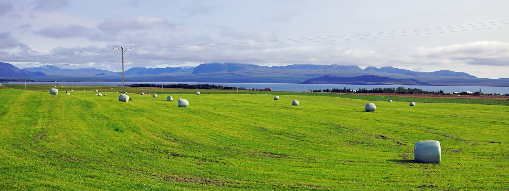
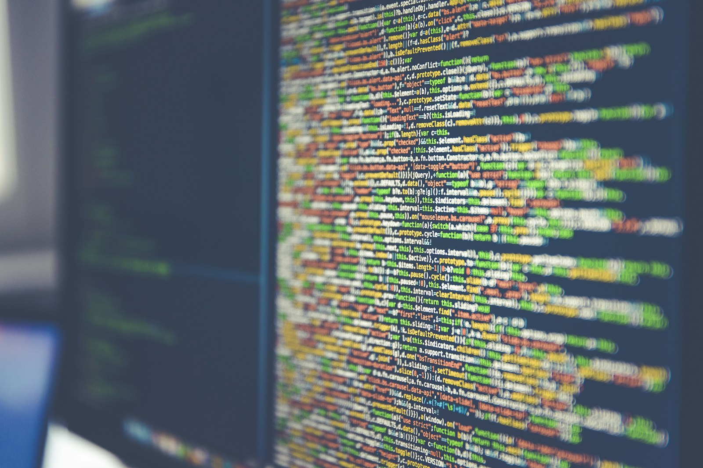
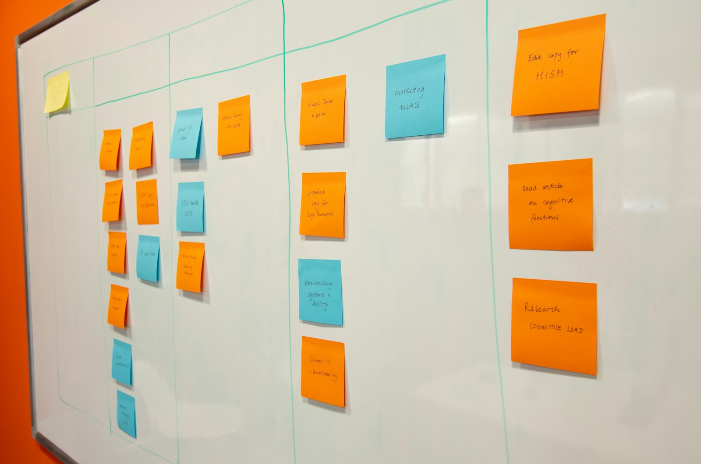

Sannprófun fyrir teymi sem nota gervigreind í þróun.
Hugbúnaðarprófanir fyrir teymi sem nýta gervigreind og fyrirtæki sem þurfa meiri sjálfvirkni
Byrjaðu að gefa út lausnir með öryggi með því að hafa gæðaeftirlit með frá byrjun.
Kalvex hjálpar íslenskum tækniteymum að setja skýr gæðaviðmið, sjálfvirkar prófanir og markvissa verkefnastjórn utan um þróun með gervigreind, handvirkar prófanir og flókin afhendingarverkefni.
Kalvex
Gæðakerfi
Gæði
Sjálfvirkar prófanir
Gervigreind
Gæðaeftirlit og markmiðasetning
Verkefnastjórnun
taktur og ábyrgð
Nútíma hugbúnaður
flæði, endurgjöf, lærdómur

Íslensk tækniráðgjöf
Staðbundin ráðgjöf fyrir hugbúnað sem þarf að standast raunverulegt álag.
Kalvex tengir gæðavinnu við daglega þróun, útgáfur og ákvarðanir. Markmiðið er einfalt: færri óvissar útgáfur, skýrari ábyrgð og betra flæði frá hugmynd til afhendingar.
Handvirk þekking verður að keyrandi verndarlagi.
Áhætta, ábyrgð og næstu skref verða sýnileg.
Hvar Kalvex skapar mest virði
Þrjú vandamál sem þarf að leysa áður en hraðinn verður öruggur
Fyrirtæki þurfa ekki fleiri skýrslur sem enda í möppu. Þau þurfa skýr vinnubrögð, sjálfvirkar prófanir og mælingar sem nýtast í daglegri þróun, útgáfum og ákvörðunum.
Þróun með gervigreind
Gervigreindartól geta hraðað kóðun, en þau sannreyna ekki eigin niðurstöður. Kalvex setur upp kröfur, próf, mælingar og útgáfuhlið sem halda vinnunni innan öruggra marka.
Lítil eða engin sjálfvirkni
Ef prófanir eru enn að mestu handvirkar verður hver útgáfa dýrari en hún þarf að vera. Við byggjum sjálfvirka gæðakeðju sem byrjar á mikilvægustu áhættunni.
Verkefni sem missa taktinn
Gæði snúast ekki bara um próf. Þau snúast líka um forgangsröðun, skýrar kröfur, ábyrgð og taktfasta framkvæmd.
Sannprófun
Gervigreind getur búið til kóða hratt. Það er ekki það sama og að vita að hann virki.
Stór mállíkön eru öflug við að búa til hugmyndir og kóða, en sannprófun flókins kerfis er oft erfiðari en myndunin sjálf. Þegar eldri kerfi, samhliða breytingar og óljósar kröfur blandast saman eykst flækjustigið hratt og ekkert slíkt tól sér heildarmyndina eitt og sér.
Kalvex brýr þetta bil með prófunararkitektúr, útgáfustýringu, mælanlegum samþykktarskilyrðum og skýrri verkefnastjórn. Markmiðið er ekki að hægja á teyminu. Markmiðið er að gera hraðann nothæfan.
01
Skilgreina áhættu
kerfi, gögn, notendur
02
Kóða prófanir
forritaskil, viðmót, flæði, reglur
03
Setja útgáfuhlið
próf, mælingar, samþykki
04
Afhenda með vissu
minni áhætta, meiri ró
Aðferðin
Ráðgjöf sem skilur eftir sig starfandi kerfi
Við mælum áður en við breytum
Við kortleggjum núverandi flæði, villumynstur, útgáfutíðni og prófunarstöðu áður en við leggjum til lausn.
Við vinnum inni í teyminu
Kalvex kemur ekki sem ytri eftirlitsaðili. Við vinnum með vöru, þróun, gæðum og stjórnendum svo breytingin festist.
Við skilum verkfærum, ekki bara áliti
Niðurstaðan á að vera keyrandi próf, skýrari kröfur, betri ferlar og mælingar sem sýna stöðu gæðamála.
Úr vinnunni
Minna af hvítum pappír. Meira af kerfum sem sjást og virka.
Gæðavinna verður skiljanlegri þegar hún sést sem flæði: kóði, mælingar, innviðir, skipulag og útgáfuskilyrði sem styðja hvert annað.


